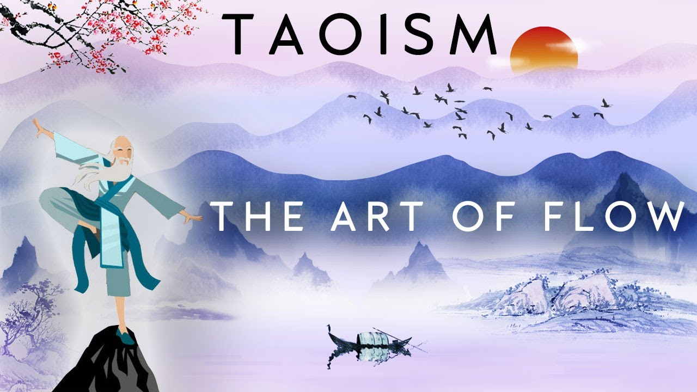
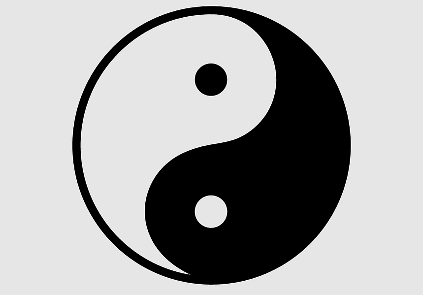

What is taoism?
Taoists believe in harmony with the natural flow of the universe (Tao), striving for balance through simplicity, embracing the interplay of opposites (Yin and Yang), practicing effortless action (Wu Wei), and cultivating inner peace through meditation and humility.
Taoism is often referred to as the philosophy of "flow". This is because Taoism teaches about the value of flow states. When you are doing something and all of a sudden you "get in the zone", that is a flow state. Flow states allow people to focus more efficiently and more effectively than normal.

Inspirational Taoist Quotes
-
"If you are depressed you are living in the past. If you are anxious you are living in the future. If you are at peace you are living in the present." - Lao Tzu
-
"Watch your thoughts, they become your words; watch your words, they become your actions; watch your actions, they become your habits; watch your habits, they become your character; watch your character, it becomes your destiny." - Lao Tzu
-
"A path is made by walking on it." - Chuang Tzu
-
"Care about what other people think and you will always be their prisoner." - Lao Tzu